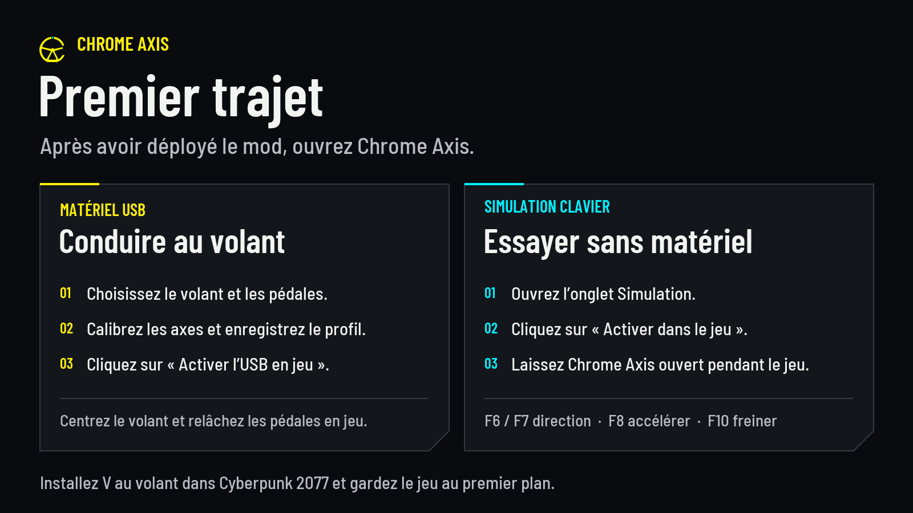
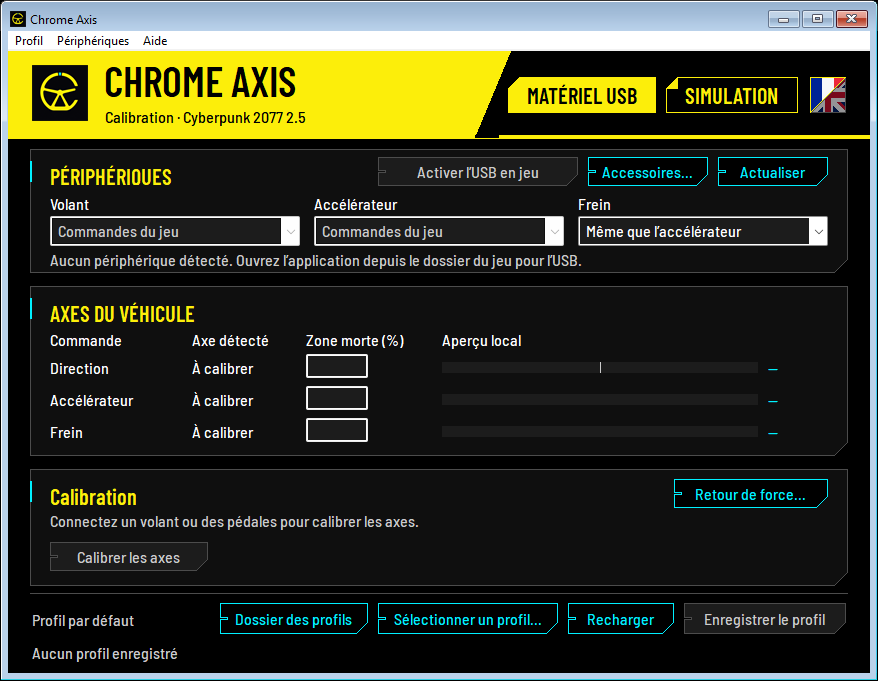
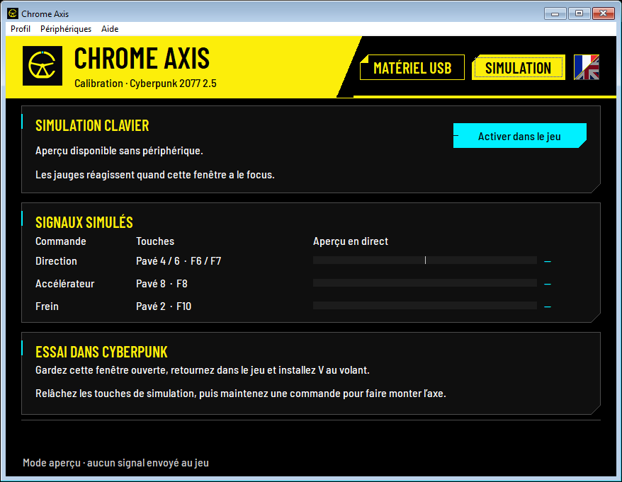

Chrome Axis ajoute la direction, l’accélérateur et le frein analogiques à Cyberpunk 2077 sur PC. Calibrez le volant et les pédales sur la même base ou sur des périphériques DirectInput distincts. L’application propose des jauges en direct, des zones mortes réglables et des profils nommés.
- Volant et pédalier. Enregistrez le profil et activez l’USB. Vous pouvez ensuite fermer l’application.
- Simulation clavier. Testez les commandes progressives sans matériel. Gardez l’application ouverte pendant la conduite.

Nouveauté de la 0.4.15
Le sélecteur de langue est un carré divisé en diagonale, à droite de Simulation. Cliquez sur le drapeau français en haut à gauche ou sur le drapeau britannique en bas à droite. La moitié choisie s’illumine aussitôt. Relancez Chrome Axis pour appliquer le changement.
Aide → Langue → Automatique (Windows) choisit le français si Windows s’affiche en français, et l’anglais dans les autres cas. La langue de l’application s’applique à tous vos profils. Le HUD suit la langue d’affichage de Cyberpunk. Il s’affiche en français si le jeu est en français, et en anglais dans les autres cas.
Prérequis et installation
Chrome Axis 0.4.15 cible Cyberpunk 2077 2.5 sur Windows x64 (Cyberpunk2077.exe en version 3.0.88.46235). Installez RED4ext 1.31.1 et redscript 0.5.32.
Fermez le jeu. Dans Vortex, importez le ZIP avec Installer depuis un fichier, puis activez et déployez le mod. Pour une installation manuelle, extrayez le ZIP à la racine du jeu. Ouvrez red4ext/plugins/chrome_axis/ChromeAxis.exe depuis le dossier du jeu.
Conduire au volant
- Dans Matériel USB, cliquez sur Actualiser et choisissez les périphériques du Volant, de l’Accélérateur et du Frein. Commandes du jeu conserve les commandes habituelles pour l’axe choisi.
- Cliquez sur Calibrer les axes. Capturez le centre et les butées du volant, puis le repos et la pleine course de chaque pédale. Vérifiez que la direction va de −100 % à +100 % et que chaque pédale va de 0 % à 100 %. Ajustez Zone morte (%) si une commande bouge au repos, puis cliquez sur Enregistrer le profil.
- L’USB en jeu est désactivé par défaut. Cliquez sur Activer l’USB en jeu, puis fermez Chrome Axis. Installez V au siège conducteur, gardez le jeu au premier plan, centrez le volant et relâchez les pédales et les palettes pour armer les commandes. Pour arrêter l’USB, ouvrez l’application et cliquez sur Désactiver l’USB en jeu.
Des pédales sur un axe combiné peuvent partager un point de repos, avec des courses opposées. Sélectionnez des axes séparés dans le pilote pour mesurer les deux pédales simultanément. Sélectionner un profil… permet de changer de profil ou de créer une copie nommée des réglages enregistrés. Chaque profil garde sa calibration, ses zones mortes, ses affectations d’accessoires et son retour de force. Le jeu lit le profil actif. L’activation USB est commune à tous les profils.

Le HUD affiche MOD CHARGÉ lorsque Chrome Axis est présent, USB EN ATTENTE tant que les commandes se préparent, puis USB PRÊT une fois qu’elles sont armées. SIGNAL USB apparaît brièvement à l’envoi d’une valeur d’axe ou d’une touche d’accessoire. SIMULATION indique que le jeu reçoit le signal de la simulation clavier.
Essayer au clavier
Ouvrez Simulation et maintenez une touche avec l’application au premier plan pour voir l’entrée progresser dans l’aperçu. Cliquez sur Activer dans le jeu et laissez l’application ouverte. Vous pouvez la réduire. Installez V au siège conducteur, placez le jeu au premier plan et relâchez les touches pour armer les commandes.
- Braquer à gauche / à droite — F6 / F7 ou pavé numérique 4 / 6.
- Accélérer / freiner — F8 / F10 ou pavé numérique 8 / 2.
Activez Verr. num. pour utiliser le pavé numérique. Pour terminer l’essai, cliquez sur Arrêter la simulation, revenez dans Matériel USB ou fermez Chrome Axis.

Retour de force et accessoires
- Le retour de force nécessite un actionneur DirectInput sur l’axe de direction calibré. Enregistrez la calibration, ouvrez Retour de force…, activez-le pour le profil en cours et commencez à faible intensité. L’effort varie avec la vitesse, la masse et le déplacement latéral du véhicule. Réglez l’intensité de 1 à 35 % de la force nominale DirectInput, inversez le sens au besoin et désactivez les secousses de collision séparément.
- Accessoires… associe boutons, directions de croix et axes à des touches grâce au clavier visuel. La rangée de chiffres et le pavé numérique sont distincts. Boîte / palettes… couvre le séquentiel et les grilles en H à 6, 7 ou 8 rapports, marche arrière comprise. Appliquez les affectations, enregistrez-les et activez l’USB en jeu. Le changement manuel des rapports nécessite un mod de transmission configuré avec les mêmes touches. Pour une grille en H, ce mod doit accepter une touche par rapport.
Dépannage
- USB EN ATTENTE. Centrez le volant, relâchez les pédales et les palettes, puis vérifiez les commandes dans les contrôleurs de jeu Windows (
joy.cpl). - Les jauges bougent et le véhicule reste immobile. Consultez
red4ext/logs/chromeaxis-*.log. ComparezChrome Axis USB configuration directorydans le journal avec le chemin ouvert par Dossier des profils. Si le journal du mod est absent, consultezred4ext-*.logpour vérifier le chargement du plugin et des scripts. MSVCP140.dllouVCRUNTIME140.dllmanquant. Installez le redistribuable Microsoft Visual C++ v14 x64. Téléchargement Microsoft- Mises à jour. Fermez le jeu et l’application, puis sauvegardez tout le dossier
Profil. Retirez l’ancienne version avant d’installer la nouvelle. Restaurez la sauvegarde et cliquez sur Recharger.
Le ZIP inclut les deux guides complets, README.md en français et README.en.md en anglais.
Crédits
Mod de fans non officiel maintenu par EsterOne001. L’intégration des commandes analogiques et la structure des champs de Cyberpunk 2.5 s’appuient sur Direct Wheel 3.4.1. Merci à Grant Perdue, SERG (natpoh), DesignWithTommy, aux contributeurs de RED4ext et de redscript et aux auteurs de Barlow. Les crédits complets et les licences sont dans le ZIP. Code source de Chrome Axis · Projet d’origine de Grant Perdue · Direct Wheel 3.4.1 · Moza and Direct Drive Wheel Support de SERG
Codex a aidé à rédiger cette fiche. OpenAI ImageGen a servi à créer l’illustration promotionnelle et à détourer le logo affiché dans le HUD.